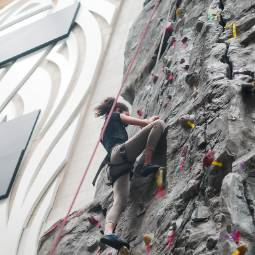

UofSC Climbing Wall
The UofSC climbing wall is open for top rope climbing and bouldering, with routes for both beginners and advanced climbers.
The best way to prepare yourself for outdoor climbing is training indoors.

The UofSC climbing wall is open for top rope climbing and bouldering, with routes for both beginners and advanced climbers.

Capital Climbing Cayce is open to the public with no appointment needed.

projectROCK offers Indoor Sport Climbing, Lead Climbing, and Bouldering.